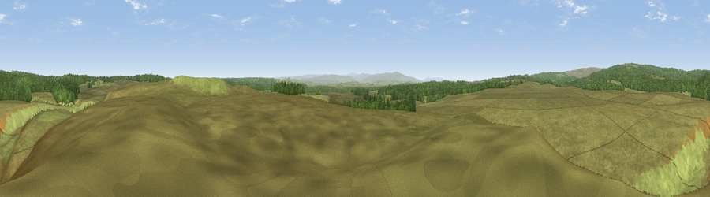

Viewpoint c11517_7368
#19428 in England · top 47% of its area beats it · —The view, rendered

A 360° render of this exact spot computed from the terrain model, tree cover and land cover — summer colours, afternoon light, calibrated against photographs of famous viewpoints. Real trees, hedges and buildings will differ in detail.
The panorama
Grey silhouette: terrain skyline in each direction (720 bearings, Earth curvature and refraction included). Dashed green: skyline with trees (+15 m) and buildings (+8 m) as obstacles. Blue strip: how far the ground is visible on each bearing.
Where the view opens
Wedge length = distance to the farthest visible ground on that bearing (vegetation-aware). Rings at 10, 25 and 50 km.
What fills the view
89% grassland · 11% woodland
Angular shares of the visible panorama (visual magnitude), not map area. Landscape diversity 0.15 (0–1 Shannon).
Key numbers
More beautiful places nearby
The staircase of upgrades: each row has a higher view potential than everything closer. Driving times are estimates from straight-line distance, calibrated against real road routing — check an actual route before setting out.
| Place | Direction | Drive | Score |
|---|---|---|---|
| Viewpoint c11587_7305 | NW · 5 km | ~10 min | 66.9 |
| Bolts Law | N · 6 km | ~13 min | 67.1 |
| Viewpoint c11634_7288 | NW · 7 km | ~15 min | 71.8 |
| Sighty Crag | WNW · 10 km | ~19 min | 74.7 |
| Viewpoint near Bewcastle | WNW · 10 km | ~19 min | 76.6 |
| Viewpoint near Bewcastle | WNW · 10 km | ~20 min | 78.9 |
| Viewpoint c11644_7156 | WNW · 12 km | ~23 min | 80.8 |
| Viewpoint c11995_7247 | NNW · 25 km | ~40 min | 82.1 |
55.07632, -2.49606 · source: screening · position refined by local search. Computed location — check access rights before visiting.